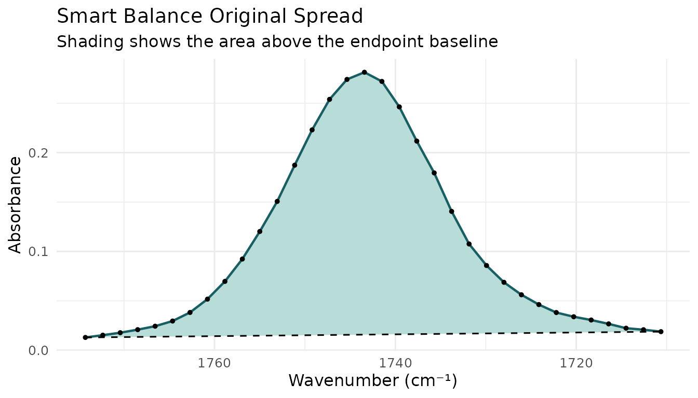

How much absorbance lies above a local baseline between 1710 and 1775 cm⁻¹ in Smart Balance Original Spread? The measured FTIR spectrum has 34 points in that window. Their baseline-corrected area is 5.651018 absorbance·cm⁻¹. The calculation below reproduces that number from the acquisition file.
Read the measured spectrum
The package includes the original file from readJDX 0.6.4. The instrument header dates the acquisition to November 22, 2016, names the origin as “Lab” and declares the file public domain. Original JCAMP-DX file
path <- system.file("extdata", "SBO.jdx", package = "measure", mustWork = TRUE)
record <- measure_read_jcamp(path, sample_id = "sbo-original",
injection_id = "ftir-2016-11-22", channel_id = "ir", curve_id = "sbo-ftir",
source_id = "SBO.jdx")
digest <- record$sources$source_sha256[[1]]
stopifnot(digest == "e74d245d54aa3698babaa648172a422f1a2be48c7e2470544626a6f884e7abbd")
measure_jcamp_headers(path) |> filter(label %in% c("XUNITS", "YUNITS", "YFACTOR"))## # A tibble: 3 × 2
## label value
## <chr> <chr>
## 1 XUNITS 1/CM
## 2 YUNITS TRANSMITTANCE
## 3 YFACTOR 1.000000E-008The reader applies the file’s scale factor to recover fractional transmittance . Some readings exceed 1 after background correction. Keeping them as recorded gives small negative absorbances there. For a file in percent transmittance, first divide the percentages by 100.
sample <- tibble(sample_id = record$samples$sample_id, spectrum = record$curves$.measures)
processed <- recipe(~ ., data = sample) |>
update_role(sample_id, new_role = "id") |>
step_measure_absorbance(measures = "spectrum") |>
prep() |> bake(new_data = NULL)
spectrum <- processed$spectrum[[1]]Measure the area above the endpoint line
The recipe computes . Inside the requested window, draw a straight line between the first and last observed absorbances. Subtract it point by point and integrate the signed residuals by the trapezoidal rule. Sorting by increasing wavenumber gives the same area in either acquisition direction. The integration stops at the observed endpoints without extrapolating to the window edges.
window <- c(1710, 1775)
band_trace <- function(signal, limits) {
signal |>
as_tibble() |>
filter(between(location, limits[1], limits[2])) |>
arrange(location)
}
trace <- band_trace(spectrum, window)
stopifnot(nrow(trace) >= 2, all(is.finite(trace$value)))
trace$baseline <- with(trace, approx(range(location), c(first(value), last(value)), location)$y)
corrected <- new_measure_tbl(trace$location, trace$value - trace$baseline)
integration_input <- tibble(signal = new_measure_list(list(corrected)))
integrator <- recipe(~ ., data = integration_input) |>
step_measure_integrals(regions = list(band = window), measures = "signal", prefix = "area_") |>
prep()
area <- bake(integrator, new_data = integration_input)$area_band[[1]]
area## [1] 5.651018The recorded endpoints are 1710.634520 and 1774.277066 cm⁻¹. The largest observed absorbance in that interval is at 1743.420074 cm⁻¹. Before subtraction the area is 6.659903 absorbance·cm⁻¹. The corrected area describes this band in this sample under the stated baseline convention. Assigning a chemical identity or inferring concentration requires additional evidence.
band_plot <- ggplot(trace, aes(location, value)) +
geom_ribbon(aes(ymin = baseline, ymax = value), fill = "#b8dcd8") +
geom_line(colour = "#175f63", linewidth = 0.8) +
geom_line(aes(y = baseline), linetype = "dashed") +
geom_point(size = 1) +
scale_x_reverse() +
labs(x = "Wavenumber (cm⁻¹)", y = "Absorbance",
title = "Smart Balance Original Spread", subtitle = "Shading shows the area above the endpoint baseline") +
theme_minimal(base_size = 12)
band_plot
An independent Python calculation starts from the file bytes, computes the raw trapezoids in decimal arithmetic and subtracts the analytically integrated baseline. It gives 5.651018156303961 absorbance·cm⁻¹. The checks below also exercise reversed acquisition order and windows with too few observations to form a trapezoid. Independent calculation
stopifnot(nrow(trace) == 34L, abs(area - 5.651018156303961) < 1e-12)
descending <- new_measure_tbl(rev(spectrum$location), rev(spectrum$value))
stopifnot(identical(band_trace(descending, window), trace[c("location", "value")]))
sparse <- tibble(signal = new_measure_list(list(
new_measure_tbl(c(100, 101), c(0.1, 0.2)), # outside the window
new_measure_tbl(1743, 0.2) # one observed point
)))
sparse_areas <- bake(integrator, new_data = sparse)$area_band
stopifnot(all(is.na(sparse_areas)))
sparse_areas # NA, NA## [1] NA NAExport the measurement
Keep the measurement, source identity, settings and plot together in a standalone report. A local report method supplies these sections using the core results interface. This calculation requires no technique-specific pack.
results <- measure_results(processed, measures = "spectrum", id_cols = "sample_id")
class(results) <- c("ir_band_results", class(results))
results$band_plot <- band_plot
results$measurement <- tibble::tribble(
~Field, ~Value,
"Integrated area", sprintf("%.9f absorbance·cm⁻¹", area),
"Sample / acquisition", paste(sample$sample_id, record$injections$injection_id, sep = " / "),
"Source", basename(path),
"SHA-256", digest,
"Conversion", "Fractional transmittance to absorbance, A = −log10(T)",
"Requested window", sprintf("%g–%g cm⁻¹", window[1], window[2]),
"Observed endpoints", sprintf("%.6f–%.6f cm⁻¹", min(trace$location), max(trace$location)),
"Observations", as.character(nrow(trace)),
"Integration", "Trapezoids after subtraction of the straight line between observed endpoints"
)
measure_report_sections.ir_band_results <- function(x, ...) {
list(Measurement = x$measurement, `Observed band` = x$band_plot)
}
render_measure_report(results, "smart-balance-band.html",
title = "Infrared band area in Smart Balance Original Spread", open = FALSE)